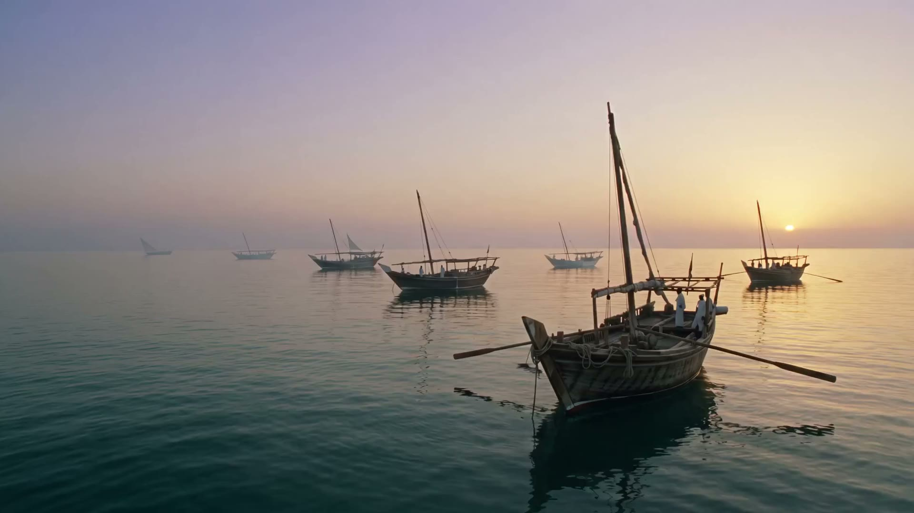
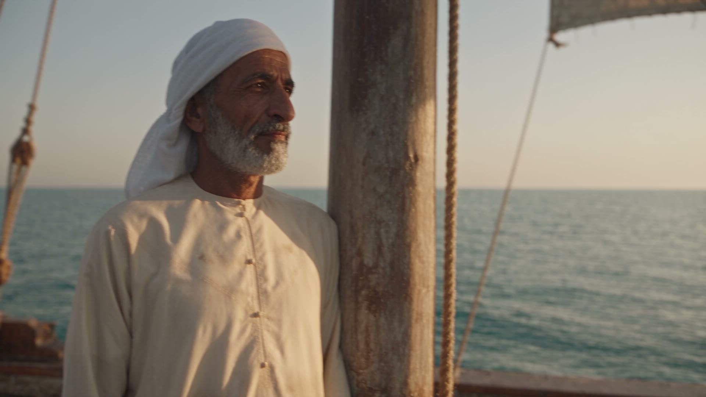
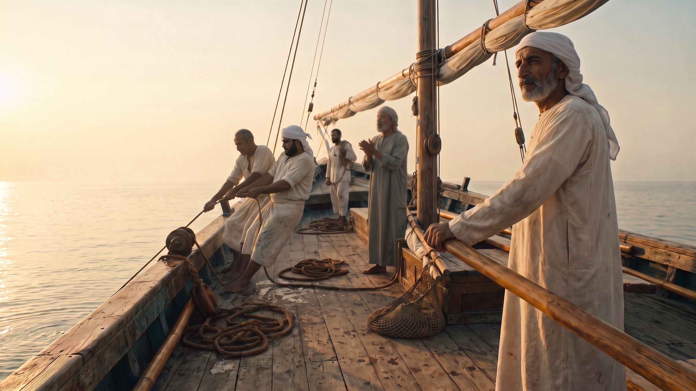
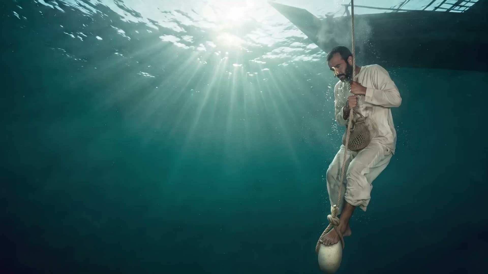
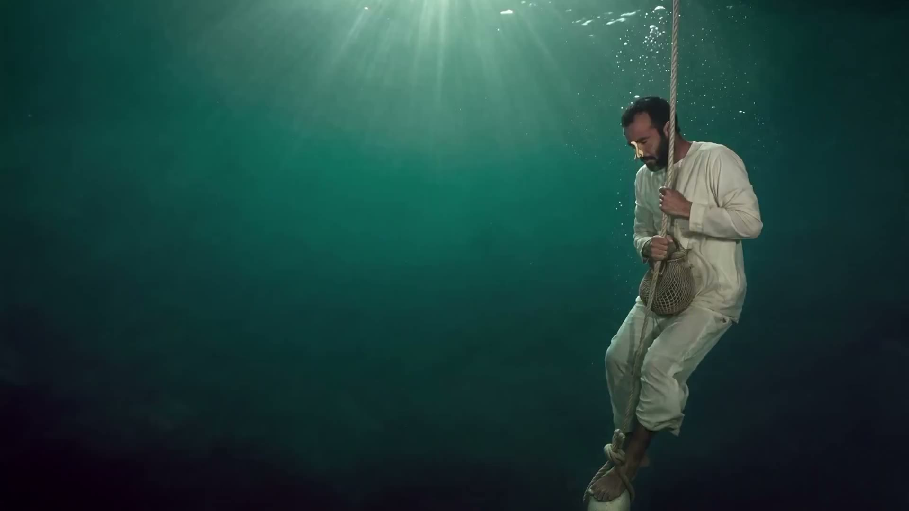
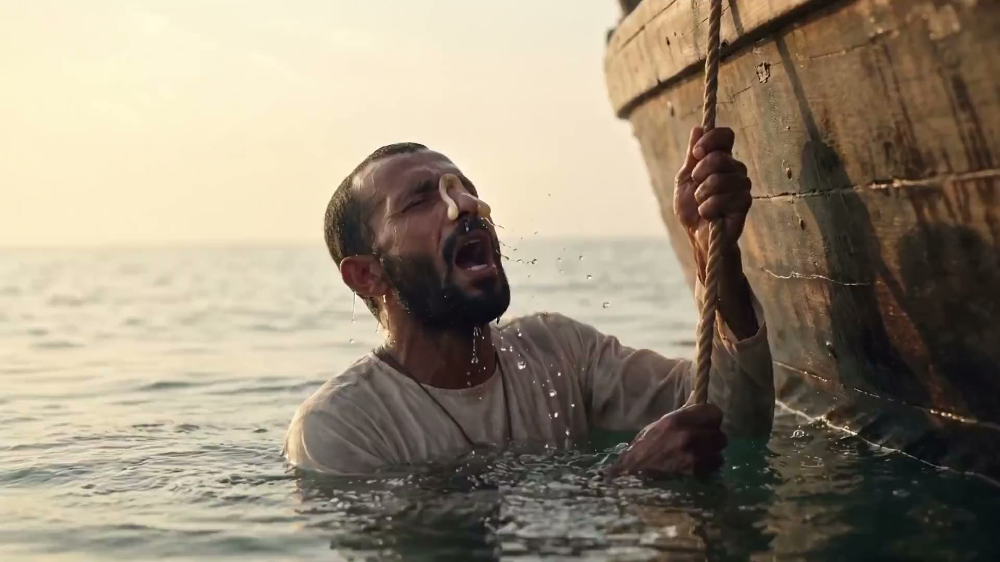
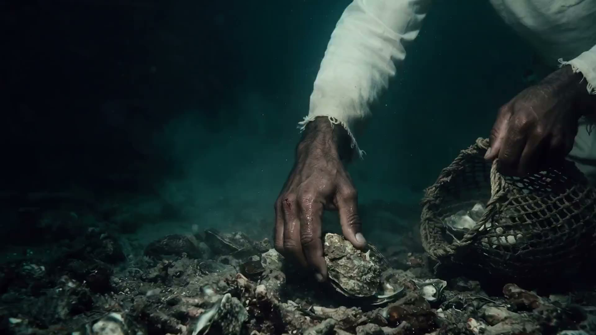
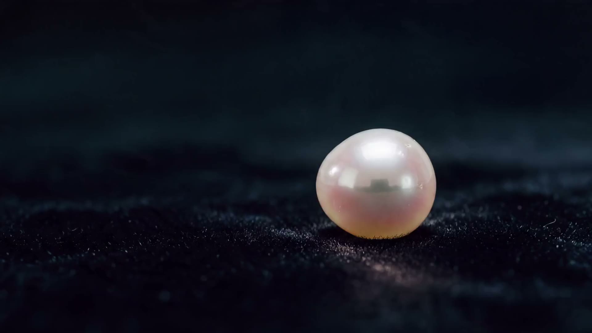

Everything precious here began with one breath.
Take a breath.
Dubai Creek, today
Take a breath.
Dubai Creek, today

Before the towers, there was the sea.
Pearling built the fortunes of most of the Gulf's great merchant dynasties.
In 1949, the last pearling fleet of any size put into Dubai.
The Gulf, 1949


No pearl was ever found alone.
Nakhuda, the captainEvery voyage answered to him.
Everything on board was done to singing, stamping and hand-clapping.
Nahham, the singer
Saib, the haulers who pulled the divers back up
Ghais, the diver
Take a breath with him.
-

No pearl was ever found alone.
Nakhuda, the captain
-

Every voyage answered to him.
-
Nahham, the singer
Everything on board was done to singing, stamping and hand-clapping.
-

Saib, the haulers who pulled the divers back up
-
Ghais, the diver
Take a breath with him.






The dive
One rope. One stone.
One breath.
The life of a diver was often short and harsh.
Press and hold. Let go to come up for air.

Down here, everything is patience.
Your hands search the bed by touch.

The sea gives slowly.
The crew opened the shells the following day.
Pinctada margaritifera, one of the Gulf pearl oysters

The pearl
Oh sea! Oh sea!
This is the pearl of the land.
Have you in the cradles of your shells a pearl to match?
What makes a pearl special.

- Size and weight
- Shape
- Colour
- Lustre
- Surface quality

Sultan Ali Al-Owais, a pearl merchant's son, kept them.
It was his wish to display his natural Gulf pearls “as a reminder of a way of life now lost”.
“From dhows to divers. A story that began in 1963.”